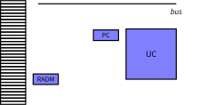
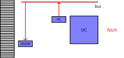
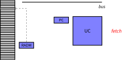
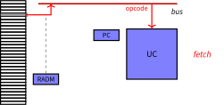
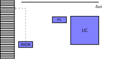
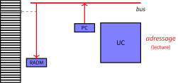
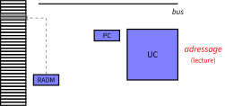

Systèmes d'exploitation
Organisation et Gestion de la mémoire
3A - Cursus Ingénieurs - Dominante Informatique et Numérique
CentraleSupelec - Université Paris-Saclay - 2024/2025
CentraleSupelec - Université Paris-Saclay - 2024/2025

La mémoire pour qui et pour quoi ?
Pour le système d'exploitation
-
Au lancement d'une machine, l'OS est le premier programme
chargé en mémoire - L'OS aussi a besoin d'espace mémoire
- le code de son Noyau
- la table des interruptions
- la table des processus
- des structures de données (PCBs et autres )
- ...
La mémoire pour qui et pour quoi ?
Pour les processus
- A la création d'un processus, l'OS crée
un PCB et alloue
de la mémoire pour le processus. - Pour des raisons de sécurité, chaque processus doit utiliser
une zone mémoire distincte (un espace d'adresses).- quel mécanisme d'allocation de cet espace ?
- comment assurer la protection de cette zone ?
- comment assurer la transparence de cet espace ?
Espace de stockage
- Ensemble ordonné de cases indexée par leur adresse
(numéro de la case) et contenant:- des instructions $\rightarrow$ registre PC dans le processeur
- des données $\rightarrow$ registre RADM dans le processeur







Structure de la mémoire
-
Chaque case mémoire est associée à une adresse
- le numéro de la case
-
Cette adresse est obtenue depuis une instruction
- l'adresse est en binaire sur $n$ bits
-
Il y a donc $2^n$ différentes adresses possibles
- $2^n$ cases de $00\ldots0$ à $11\ldots1$
- Exemple: $32$ bits $\to$ $2^{32} \approx 4$ Go
Fonctionnement de la mémoire
-
L'UC va récupérer les instructions dans la mémoire
à partir de leur adresse (fetch); -
L'UC va récupérer les données des variables dans la mémoire
à partir de leur adresse; -
L'UC écrit dans des variables à une adresse donnée
dans la mémoire.
D'où viennent les programmes?
Le programme (code + données) est chargé depuis le disque
vers la mémoire
... il est placé à un endroit donné dans la mémoire
Question ?
quelles sont les adresses des variables en mémoire ?
quelles sont les adresses des variables en mémoire ?
Programme vs processus
Adresses symboliques vs Adresses mémoires
Édition de liens
Lors de la création de processus, l'OS instancie le programme.
Lors de la création de processus, l'OS instancie le programme.
- transformer les noms des variables en adresses.
Méthodes de liaison d'adresses
-
À la compilation $\to$ on connaît les adresses
des instructions
et de toutes les données- adresses utilisées à l'intérieur d'un programme
- adresses relatives au début du programme
-
Au chargement $\to$ la taille du processus est fixée
- adresses virtuelles (logiques): adresses utilisées dans le programme
- adresses physiques: adresses utilisées dans la RAM
- nécessite un composant de translation dans l'UC
(Memory Management Unit - MMU)
-
À l'exécution $\to$ le processus a besoin de plus de place
- déplacer le processus + réédition de lien